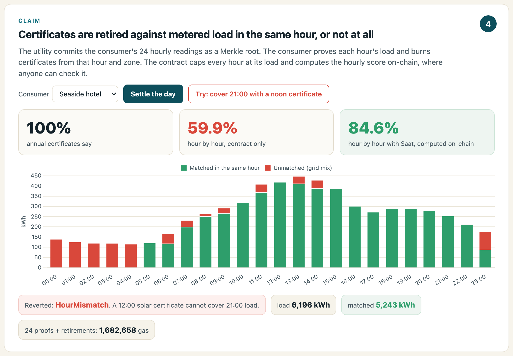

Companies call themselves "100% renewable" because they buy certificates equal to their annual electricity use. Electricity is consumed hour by hour, and a solar MWh from noon cannot have powered a hotel at 9 p.m. Using EIA-930 hourly data for 2025, we measured the gap for a 24/7 consumer that buys wind and solar certificates equal to 100% of its annual use from its own region's fleet:
Hourly accounting is where the rules are heading: the GHG Protocol's Scope 2 revision consulted on it, and U.S. registries (PJM, ERCOT, CleanCounts) already issue hourly certificates. Hourly certificates need cheap issuance, a market for individual hours, claims anyone can check, and protection against bad meter data, which a blockchain alone cannot provide.
| Step | Mechanism |
|---|---|
| 1 · AI issuance verifier | Each metered hour is checked against ERA5 reanalysis weather, sun position and clear-sky irradiance by gradient-boosted median and 99th-percentile models trained on the plant's history. Rules: power after sunset; over capacity; above the weather envelope; day total or day shape (time shift) anomaly; 30-day drift. Held hours never enter the root. The report's SHA-256 is committed on-chain. |
| 2 · Merkle issuance | commitGeneration: one root per plant per local market day (~99k gas for 24 hours). Certificates are minted lazily as ERC-1155 tokens id = plant ∥ hour, 1 unit = 1 Wh, once per plant-hour, never above registered capacity. |
| 3 · P2P market | SaatMarket: escrowed listings of one hour's certificates, so a listed hour cannot also be sold elsewhere. Scarce hours carry higher prices. Reentrancy-guarded. |
| 4 · AI day-ahead planner | Using only the previous day's forecast (Open-Meteo previous-runs archive), gradient boosting forecasts tomorrow's certificates hour by hour. Flexible load moves into forecast-surplus hours and the shortfall is bought from the cheapest listings. |
| 5 · Hourly retirement | The utility commits the consumer's 24 readings, and the day's full load enters the denominator at once. retire burns only certificates of the same hour and zone, capped at that hour's load (a noon certificate against 21:00 reverts with HourMismatch). claimSummary returns the hourly score on-chain. |

The demo day (10 July 2025) on a live local chain: the hotel's contract alone covers 59.9% of its load hour by hour. After P2P buying and the AI load shift, the on-chain hourly score is 84.6%.
NREL PVDAQ system 9068 (single-axis tracker, Kersey, Colorado; DOE Open Energy Data Initiative). The verifier was trained on 2017–2022, calibrated on 2023 and tested on Jan 2024–Apr 2025, with fraud simulated on the real test data. The table shows the share of fake energy that never becomes a certificate.
| Fraud | Capacity check (typical today) | Physics bound only | Saat AI |
|---|---|---|---|
| Power claimed after sunset | 0% | 100% | 100% |
| Output relabelled 2 h later (into scarce evening hours) | 0% | 70% | 81% |
| One hour inflated ×1.5 | 0% | 24% | 70% |
| Every hour +50% | 0% | 43% | 63% |
| Sunny day replayed on a cloudy day | 0% | 14% | 48% |
| Every hour +20% | 0% | 16% | 31% |
| Real energy wrongly held back | 0% | 7.1% | 0.52% |
Hourly error is 10.4% of capacity, against 18.0% for physics alone (R² 0.75 vs 0.42). The 30-day drift test catches 94% of persistent +30% inflations within 90 days, with no false alarms across 424 clean days. The limit: small uniform inflation (≤10%) hides in weather uncertainty, so settlement-grade meters stay the first line of defence. The verifier covers what metering does not.
The community is a 2 MW community solar plant (Antalya) and a 6 MW Aegean wind share (Karaburun), supplying a seaside hotel and an office campus in Türkiye's zone. Supply is modelled from real ERA5 weather; the loads are synthetic. The forecasters were trained on 2024 only.
The wind forecaster's error is 4.9% of capacity, against 7.0% for physics on the forecast and 11.2% for persistence.
| Hourly matched, 2025 | % |
|---|---|
| Annual claim | 100 |
| Each consumer alone | 64.4 |
| + P2P hourly trading | 66.3 |
| + AI day-ahead shifting | 69.7 |
| Perfect foresight (bound) | 70.8 |
SaatRegistry and SaatMarket, with 22 Foundry tests. They include a fuzz test that matched energy never exceeds load, plus tests for tampered proofs, re-mint attempts, wrong day, wrong zone and wrong hour.results/*.json.| Data | Source |
|---|---|
| Hourly U.S. grid generation and demand, 2025 | EIA-930 six-month files (U.S. EIA), public domain |
| Measured PV output, system 9068 | NREL PVDAQ, DOE Open Energy Data Initiative |
| ERA5 hourly weather; previous-day forecasts | Open-Meteo archive and previous-runs APIs (CC BY 4.0) |
| Life-cycle emission factors | IPCC AR5 WG3 Annex III medians; oil/other per Electricity Maps defaults |
The Antalya plants are modelled from real weather, and the hotel and campus loads are synthetic; no real company is depicted. The hidden-emissions estimate uses each region's own average hourly generation intensity and ignores imports. The verifier is evaluated on one real plant. The demo runs on a local test chain. Code is MIT-licensed.